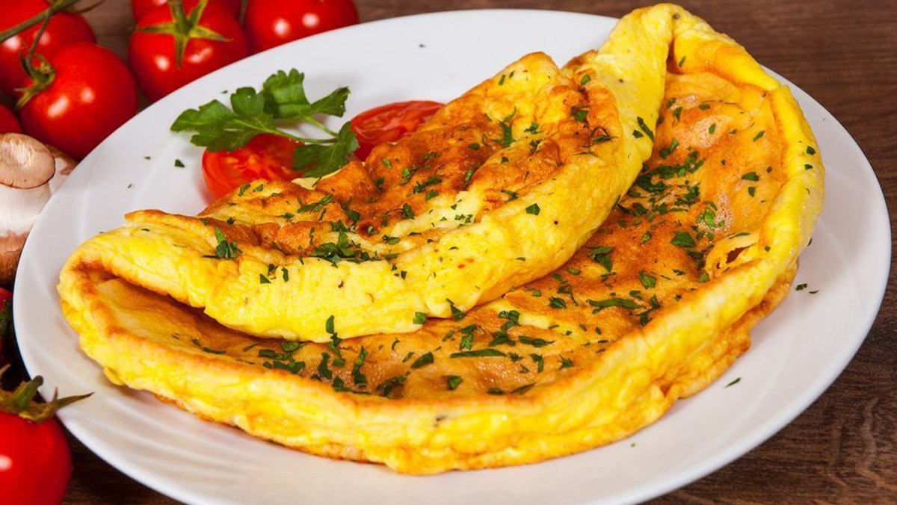

Scrambled Eggs
Eggs are one of my favorite foods.Here is a recipe for deliciously rich scrambled eggs.

Ingredients
- 2 eggs
- 1tbs butter
- 2tbs cream
Method
- Melt butter in a frying pan over a medium
- Gentlymix the eggs and cream in a bowl
- Once butter has melted add cream and eggs
- Using a spatula fold the eggs from the edge of the pan to the every 20 seconds (as if you are making an omelette)
- When the eggs are still moisr remove from the heat (it will continue to cook on the plate until serves)